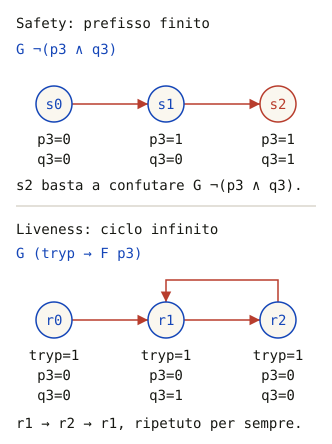

Il capitolo in un paragrafo. In un programma concorrente lo stesso input può dare risultati diversi a seconda dell'interleaving, e un test esercita solo alcuni scenari: può mostrare un errore, non la sua assenza. La correttezza si stabilisce verificando le proprietà su tutti gli scenari, con due tecniche formali. Il model checking genera tutti gli stati raggiungibili di un modello e controlla le proprietà, restituendo un controesempio se ne trova uno violato. La dimostrazione induttiva prova un invariante sullo stato iniziale e su ogni passo. Il corso usa Java PathFinder, che esplora tutti gli interleaving di un programma Java; SPIN e TLA+ sono le alternative classiche.
In un programma sequenziale rieseguire con lo stesso input dà lo stesso risultato: si scrive un test, si trova il difetto, si corregge, si riesegue. In un programma concorrente lo stesso input può dare output diversi a seconda dello scenario, e ogni esecuzione probabilmente ne segue uno diverso. Non si può fare debugging nel modo solito. Due thread che incrementano 100 volte un contatore non protetto danno quasi sempre 200, e un test che controlla 200 passa migliaia di volte; lo scenario che perde un incremento è improbabile, ma esiste, e per la legge di Murphy prima o poi si presenta.
| Attività | Domanda |
|---|---|
| Testing | cerca malfunzionamenti eseguendo il sistema su scenari scelti: rivela la presenza di errori, non la loro assenza |
| Verifica | il sistema soddisfa la sua specifica? «Abbiamo costruito il sistema nel modo giusto?» Una proprietà deve valere per tutti gli scenari possibili |
| Validazione | il sistema soddisfa le aspettative del cliente? «Abbiamo costruito il sistema giusto?» |
Le slide usano la terminologia classica dell'ingegneria del software. L'errore è l'azione umana che produce un risultato sbagliato. Il fault (difetto) è la manifestazione di un errore nel sistema. Il failure (malfunzionamento) avviene quando il sistema, incontrando un fault, si comporta in modo scorretto. Un failure può avere più fault come causa, e un fault può causare più failure.
Nella letteratura sull'affidabilità (Avizienis, Laprie e altri) le parole hanno un altro ordine: fault è la causa, error la parte sbagliata dello stato interno, failure la deviazione del servizio osservata dall'esterno. All'esame conviene usare quella delle slide e, se serve, dire quale si sta usando.
Anche i test si dividono come le proprietà. I test di safety controllano che il comportamento resti conforme alla specifica, di solito con asserzioni sugli invarianti. I test di liveness controllano il progresso, e sono più difficili da impostare: quanto aspettare prima di concludere che qualcosa non accadrà mai? I limiti restano due: un test copre solo un sottoinsieme degli scenari, e il codice di test può introdurre ritardi o sincronizzazioni che cambiano lo scheduling e nascondono il difetto (heisenbug). Anche le stampe su standard output, usate per «vedere» l'ordine delle azioni, sono soggette all'interleaving.
Le proprietà di correttezza di un programma concorrente, che può anche non terminare, riguardano le sue computazioni e devono valere in ogni scenario. Sono di due tipi, e si scrivono in logica temporale lineare (LTL), introdotta nel capitolo 3.
□P. Una violazione si vede in un prefisso finito: basta raggiungere uno stato cattivo, e nessuna continuazione può rimediare.◇P, o □(richiesta → ◇risposta). Nessun prefisso finito la smentisce, perché la cosa buona potrebbe ancora arrivare. Una violazione è un comportamento infinito: in un modello finito, un cammino che finisce in un ciclo che si ripete per sempre senza che la cosa buona accada.
□¬(p3 ∧ q3), basta il prefisso finito s0 s1 s2: in s2 entrambi sono in sezione critica. In basso, per la liveness □(tryp → ◇p3), serve un ciclo: da r1 a r2 e di nuovo a r1, per sempre, P chiede di entrare e non entra mai.Per questo, dicono le slide, la safety è più facile da verificare: basta esaminare gli stati uno per uno e fermarsi al primo che viola la proprietà. Per la liveness non basta guardare gli stati: bisogna esaminare gli scenari, e servono teoria e strumenti più complessi. Inoltre una liveness vale spesso solo sotto un'ipotesi di fairness (capitolo 3): senza, lo scheduler potrebbe non far mai avanzare un processo pronto, e quasi nessuna liveness sarebbe vera.
Ricci chiede di classificare le proprietà scritte per l'assignment (anche quelle controllate su una rete di Petri con Tina). La prova è chiedersi: una violazione si può mostrare con un'esecuzione finita? Se sì è safety, se serve un'esecuzione infinita è liveness.
| Proprietà | Tipo | Perché |
|---|---|---|
| Mai due thread in sezione critica | safety | lo stato con entrambi dentro è un controesempio finito |
| Il buffer non ha mai più di N elementi, né meno di 0 | safety | invariante di stato |
| Se il programma termina, il contatore vale 200 | safety | un'esecuzione che termina con 199 lo smentisce |
| Il programma termina | liveness | solo un'esecuzione infinita lo smentisce |
| Chi chiede la sezione critica prima o poi entra (niente starvation) | liveness | il controesempio è un ciclo infinito di attesa |
| Chi chiede la sezione critica viene sorpassato al più k volte | safety | il (k+1)-esimo sorpasso si vede in un prefisso finito; non garantisce da solo che si entri |
| Nessuno stato raggiungibile in cui tutti i thread sono bloccati | safety | è un invariante sugli stati: è il deadlock che controlla JPF |
| Se qualcuno vuole entrare, prima o poi qualcuno entra | liveness | è l'«assenza di deadlock» del problema della sezione critica (capitolo 4) |
| Nessun worker supera la barriera prima che arrivino tutti | safety | un passaggio anticipato è un evento finito |
| Se arrivano tutti, prima o poi tutti superano la barriera | liveness | un'attesa infinita lo smentisce |
| Rete di Petri limitata; somma di token costante su certi posti (invariante di posto); nessuna marcatura morta raggiungibile | safety | proprietà di ogni marcatura raggiungibile (capitolo 9) |
| Rete viva: ogni transizione può sempre tornare abilitata | tipo liveness | riguarda ciò che potrà accadere; non si esprime in LTL, perché parla di possibilità e non di tutte le esecuzioni |
La stessa parola può indicare proprietà di tipo diverso: «assenza di deadlock» è safety se significa «nessuno stato bloccato è raggiungibile», liveness se significa «il sistema continua a progredire». All'esame conviene dire quale delle due si intende.
Il model checking è la tecnica più usata per controllare in modo automatico le proprietà di un sistema concorrente. Si costruisce un modello del sistema: con il modello a interleaving del capitolo 2, un sistema di transizioni i cui stati sono le combinazioni di contatori di programma e variabili. Il model checker esplora in modo esaustivo lo spazio degli stati e verifica le proprietà, espresse come predicati sugli stati o come formule di logica temporale. Se il sistema le soddisfa, risponde con una conferma. Altrimenti produce un controesempio, la traccia che porta alla violazione, ed è quindi utile anche per trovare i bug, non solo per dimostrare la correttezza. La verifica si fa sul modello, non sul programma: da qui il nome.
La tecnica si applica a qualunque sistema dinamico: hardware e software, e nel software a requisiti, progetto e programmi. Intel l'ha adottata dopo il bug della divisione del Pentium (1994), la NASA per il software critico dopo la perdita del Mars Polar Lander (1999). Il program model checking la applica all'implementazione finale.
Il problema è l'esplosione dello spazio degli stati. Il numero di interleaving cresce in modo combinatorio (capitolo 2), e gli stati sono il prodotto dei valori di tutte le variabili e di tutti i contatori di programma. Le slide citano tre tecniche per contenerlo:
Anche il modellista contribuisce, astraendo ciò che non serve. Per verificare la mutua esclusione, ad esempio, sezione critica e non critica si possono ridurre a una sola istruzione ciascuna, come nei diagrammi di stato del capitolo 4. La riduzione deve però conservare la proprietà che si vuole verificare, altrimenti si verifica un altro problema.
Java PathFinder (JPF) è il model checker usato nel corso. È stato sviluppato alla NASA per il software Java critico, dopo un problema su Marte che nessun test aveva previsto, ed è oggi un progetto open source. Ha una particolarità: non serve scrivere un modello. JPF è una Java Virtual Machine, scritta in Java, che esegue il bytecode del programma lungo tutti i cammini possibili invece che lungo uno solo. A ogni punto in cui lo scheduler potrebbe scegliere un thread diverso, JPF memorizza lo stato, prova un'alternativa, torna indietro (backtracking) e prova le altre, riconoscendo gli stati già visti. Fa in modo automatico ciò che alla lavagna si fa costruendo a mano il grafo degli interleaving, con la granularità delle istruzioni bytecode.
Che cosa controlla. Di base JPF verifica due proprietà: l'assenza di deadlock, cioè stati in cui nessun thread può proseguire, e l'assenza di eccezioni non catturate, compresi gli AssertionError degli assert. Con il listener PreciseRaceDetector trova anche le race condition di basso livello: accessi concorrenti allo stesso campo, almeno uno in scrittura, senza sincronizzazione. JPF non accetta formule LTL. Le proprietà specifiche del programma si scrivono con degli assert, eventualmente appoggiandosi a variabili aggiunte apposta, come si fa in JUnit, con una differenza essenziale: in JUnit l'asserzione è controllata in uno scenario, in JPF in tutti. Per proprietà più complesse JPF è estendibile: i listener vengono chiamati a ogni passo dell'esplorazione e possono eseguire controlli propri. In pratica con JPF si verificano soprattutto proprietà di safety e l'assenza di deadlock.
Un esempio eseguito. JpfCounter avvia due thread che incrementano un campo volatile, aspetta che finiscano e controlla con un assert che il valore sia 2. Con l'argomento safe l'incremento è protetto da synchronized.
public final class JpfCounter {
private static volatile int value;
private static boolean safe;
private static void increment() {
if (safe) {
synchronized (JpfCounter.class) { value = value + 1; }
} else {
value = value + 1; // volatile: visibile, ma non atomico
}
}
public static void main(String[] args) throws InterruptedException {
safe = args[0].equals("safe");
Thread first = new Thread(JpfCounter::increment, "first");
Thread second = new Thread(JpfCounter::increment, "second");
first.start(); second.start();
first.join(); second.join();
assert value == 2 : "Lost update: value=" + value;
}
}La configurazione è un file .jpf: la classe con il main (target) e i suoi argomenti, il classpath dei .class da verificare, le proprietà da controllare, la strategia di ricerca e che cosa stampare. Con un progetto Maven il classpath è target/classes.
target = JpfCounter
target.args = unsafe
classpath = ${config_path}
vm.enable_assertions = *
search.class = gov.nasa.jpf.search.DFSearch
search.properties = gov.nasa.jpf.vm.NotDeadlockedProperty,gov.nasa.jpf.vm.NoUncaughtExceptionsProperty
report.console.property_violation = error,trace
# per le race condition di basso livello:
# listener = gov.nasa.jpf.listener.PreciseRaceDetector| Esecuzione | Esito di JPF | Che cosa si può concludere |
|---|---|---|
| incremento non protetto | 1 violazione, con la traccia: entrambi leggono 0, entrambi scrivono 1 | controesempio: il lost update esiste |
incremento synchronized (+target.args=safe) | nessun errore, ricerca completa | la proprietà vale in tutti gli interleaving di questo programma |
non protetto, ma +search.depth_limit=1 | «no errors detected», con «depth limit reached» | nulla: la ricerca si è fermata prima della violazione |
| classe target inesistente | la ricerca non parte | nulla: non è né una verifica né un controesempio |
Esiti ottenuti con jpf-core (revisione ee18da5) e OpenJDK 11; sorgenti e risultati: JpfCounter.java, jpf-counter.jpf, jpf-results.json. Il primo caso è anche la prova che volatile non rende atomico un incremento (capitolo 10).
JPF esplora tutti gli interleaving, quindi su un programma vero, con molti thread, GUI, file e cicli lunghi, lo spazio degli stati esplode. Si verifica allora un modello ridotto del programma, come si fa alla lavagna. Si tengono i componenti con la logica di sincronizzazione, cioè i monitor e i thread che li usano, con 2 o 3 thread e pochi cicli. Si tolgono la GUI e l'I/O, sostituendo ad esempio i file con dati generati in memoria. Si traducono le proprietà in assert, lasciando a JPF il controllo del deadlock. Conviene provare anche una versione volutamente sbagliata, ad esempio senza un synchronized: se JPF non trova l'errore, la verifica non sta controllando ciò che si crede. E un «no errors detected» si legge insieme alle statistiche, per essere sicuri che la ricerca sia stata completa.
JPF non funziona con le JDK più recenti: fino a poco tempo fa accettava solo bytecode Java 8, oggi Java 11. Il programma da verificare va quindi compilato per Java 11 (nel progetto Maven del laboratorio lo imposta il pom.xml). Il modo più semplice di avere l'ambiente giusto è il container Docker del repository jpf-core.
https://github.com/javapathfinder/jpf-core, entrare nella cartella ed eseguire docker compose build: costruisce un'immagine basata su Eclipse Temurin 11.docker compose run --rm -v /percorso/pcd-jpf:/pcd-jpf jpf-dev../gradlew clean build (la test suite richiede diversi minuti; ./gradlew buildJars costruisce solo i jar). Su Windows, se gradlew non parte, il file ha fine riga CRLF: va convertito, ad esempio con sed -i 's/\r$//' gradlew.java -jar build/RunJPF.jar /pcd-jpf/esempio.jpf. Le opzioni sulla riga di comando, come +target.args=safe, prevalgono sul file.Con Visual Studio Code si può usare direttamente il dev container del repository, senza costruire l'immagine a mano. Per un programma sequenziale JPF trova un solo scenario; con due thread che eseguono due azioni ciascuno stampa l'output di tutti gli interleaving, poi «no errors detected» e le statistiche (stati, memoria).
SPIN è uno dei model checker più diffusi, nella ricerca e nell'industria, ed è molto efficiente: è stato tra i primi a introdurre le ottimizzazioni che permettono di gestire spazi di stati enormi. È usato per modellare e progettare sistemi concorrenti e distribuiti. Il modello si scrive in Promela, un linguaggio con pochi costrutti pensati per descrivere processi concorrenti, vicino allo pseudocodice del corso. Le proprietà si scrivono in LTL.
bool want[2];
byte turn = 0;
byte in_cs = 0; /* osservatore: conta chi è in sezione critica */
active [2] proctype Dekker() { /* active [2]: avvia due istanze, _pid = 0 e 1 */
byte me = _pid;
byte other = 1 - _pid;
do
:: true ->
request:
want[me] = true;
do
:: want[other] ->
if
:: turn == other ->
want[me] = false;
(turn == me); /* un'espressione come istruzione: attende che sia vera */
want[me] = true
:: else -> skip
fi
:: else -> break
od;
cs:
in_cs++;
assert(in_cs == 1); /* mutua esclusione */
in_cs--;
turn = other;
want[me] = false
od
}
ltl response_p { [] (Dekker[0]@request -> <> Dekker[0]@cs) }| Controllo (SPIN 6.5.1) | Esito |
|---|---|
| asserzione di mutua esclusione e stati finali non validi | ricerca completa, nessun errore (204 stati) |
response_p con weak fairness (pan -a -f) | ricerca completa, nessun errore |
response_p senza fairness | controesempio: P resta fermo mentre Q continua |
| variante errata, senza protocollo d'ingresso | controesempio: l'asserzione fallisce |
Sorgente e risultati: Dekker.pml, formal-results.json. Comandi: spin -a Dekker.pml, poi compilare pan.c con gcc ed eseguire ./pan (safety) o ./pan -a -f -N response_p (liveness con fairness).
TLA+ (Temporal Logic of Actions) è il linguaggio di specifica di Leslie Lamport, basato su matematica discreta semplice: insiemi e predicati. È usato per specificare e verificare sistemi reali complessi; Amazon Web Services, ad esempio, lo usa per i protocolli dei suoi servizi cloud. Una specifica TLA+ descrive l'insieme di tutti i comportamenti ammessi (tracce di esecuzione) di un sistema. Può descrivere sia le proprietà desiderate (il che cosa) sia il progetto del sistema (il come), e lo scopo è mostrare che il progetto implementa le proprietà. Lo si fa con un ragionamento matematico, oppure con il model checker TLC, che controlla le proprietà su tutte le tracce. Poiché TLA+ è molto matematico e poco procedurale, Lamport ha affiancato PlusCal (già +CAL): un linguaggio algoritmico, simile a un linguaggio di programmazione, che viene tradotto in una specifica TLA+ verificabile con TLC. In PlusCal un'azione atomica va da un'etichetta alla successiva.
Not(i) == 1 - i \* l'altro processo
--algorithm Peterson {
variables flag = [i \in {0,1} |-> FALSE], turn = 0;
process (proc \in {0,1}) {
a0: while (TRUE) {
a1: flag[self] := TRUE;
a2: turn := Not(self);
a3a: if (flag[Not(self)]) { goto a3b } else { goto cs };
a3b: if (turn = Not(self)) { goto a3a } else { goto cs };
cs: skip; \* sezione critica
a4: flag[self] := FALSE;
}
}
}
MutualExclusion == ~(pc[0] = "cs" /\ pc[1] = "cs") \* pc: le etichette correnti| Controllo con TLC | Esito |
|---|---|
MutualExclusion come invariante | ricerca completa, nessuna violazione: 58 stati distinti |
StarvationFreedom (pc[i] = "a1" ~> pc[i] = "cs") con weak fairness per ogni processo | ricerca completa, nessuna violazione |
StarvationFreedom senza fairness | controesempio: un prefisso seguito da stuttering infinito |
variante errata: a2: turn := self | controesempio in 10 stati: entrambi in cs |
Sorgenti e configurazioni: Peterson.tla, Peterson.cfg, PetersonFair.cfg, PetersonUnfair.cfg; eseguiti con TLC 2.19. Il paper di Lamport da cui viene l'esempio delle slide riporta 146 stati raggiungibili: il conteggio dipende dalla traduzione e dalla granularità della specifica, non è una costante dell'algoritmo.
Stuttering (letteralmente «balbettare») è un passo in cui lo stato non cambia. In TLA+ ogni specifica ammette per costruzione questi passi: il passo della specifica si scrive [Next]_vars, cioè «un passo di Next, oppure nessun cambiamento delle variabili», come nella dimostrazione della sezione 6. Serve a confrontare specifiche con livelli di dettaglio diversi, in cui un passo di quella astratta corrisponde a più passi di quella dettagliata. Il prezzo è che, senza ipotesi di fairness, un comportamento può «balbettare» per sempre: il sistema resta fermo anche se un processo potrebbe avanzare. È il controesempio che TLC trova a StarvationFreedom senza fairness. Aggiungendo WF_vars(proc(i)), cioè weak fairness per ogni processo, questi comportamenti vengono esclusi e la proprietà vale.
La seconda tecnica formale non esplora gli stati: li ragiona. Un invariante è una formula che deve essere vera in ogni punto di ogni computazione, come □¬(p3 ∧ q3). Si dimostra per induzione sugli stati:
Questa tecnica non soffre dell'esplosione degli stati, e vale anche per sistemi infiniti o parametrici, per ogni N. In cambio richiede di trovare la formula giusta. Il passo induttivo parte da un qualsiasi stato che soddisfa A, anche uno irraggiungibile, quindi spesso la proprietà che interessa va rafforzata in un invariante più forte, detto induttivo. Le dimostrazioni si possono automatizzare con i sistemi deduttivi, software di dimostrazione automatica di teoremi. In TLA+ la dimostrazione che Peterson garantisce la mutua esclusione ha proprio questa forma: trovato un invariante induttivo Inv, si dimostrano Init ⇒ Inv (base), Inv ∧ [Next]_vars ⇒ Inv′ (passo) e Inv ⇒ MutualExclusion.
Esempio: un invariante vero ma non induttivo. Un contatore parte da x = 0 e, finché x < n (con n pari), aggiunge 2. Vogliamo che non valga mai x = n + 1. È vero in ogni stato raggiungibile, ma non è induttivo: con n = 10, lo stato x = 9 soddisfa la proprietà e il passo successivo porta a 11. Quello stato è irraggiungibile, ma il passo induttivo non lo sa. Si rafforza allora la proprietà in Inv: 0 ≤ x ≤ n ∧ x pari. Inv vale all'inizio; se vale e x < n, essendo entrambi pari x ≤ n − 2 e quindi x + 2 ≤ n, ancora pari; infine Inv implica x ≠ n + 1. La dimostrazione vale per ogni n, cosa che un model checker non può fare.
Ogni obbligo si verifica chiedendo al solver SMT Z3 un controesempio, cioè la sua negazione: unsat significa che il controesempio non esiste, per ogni valore di n.
| Obbligo | Controesempio cercato | Esito (Z3 4.13.3) |
|---|---|---|
| base | x = 0 ∧ ¬Inv(x) | unsat |
| passo | Inv(x) ∧ Next(x, x′) ∧ ¬Inv(x′) | unsat |
| implicazione | Inv(x) ∧ x = n + 1 | unsat |
| la proprietà da sola è induttiva? | x ≠ n+1 ∧ Next ∧ x′ = n+1 | sat: n = 10, x = 9, x′ = 11 |
Sorgente e output: EvenCounter.smt2, proof-results.json; si esegue con z3 EvenCounter.smt2.
Capire perché un algoritmo è corretto, e non solo osservare che funziona, è per Ricci una competenza essenziale dell'ingegnere, tanto più quando il codice lo genera uno strumento automatico: bisogna saper giudicare se la soluzione proposta è corretta.
Perché lo stesso input può produrre scenari diversi e un test ne esercita solo alcuni: rivela la presenza di errori, non l'assenza. In più il codice di test può cambiare lo scheduling e nascondere il difetto (heisenbug).
Una tecnica che esplora in modo esaustivo tutti gli stati raggiungibili di un modello del sistema e controlla su ciascuno le proprietà di correttezza. Se una è violata produce un controesempio, la traccia che porta all'errore; il suo limite è l'esplosione dello spazio degli stati.
Java PathFinder, un model checker della NASA per Java: una JVM che esegue il bytecode lungo tutti gli interleaving, con backtracking. Di base cerca deadlock ed eccezioni non catturate, compresi gli assert falliti; con PreciseRaceDetector trova le race condition. Le proprietà si esprimono con assert, non in LTL.
Solo se la ricerca è stata completa, e solo per le proprietà controllate e per il programma verificato, di solito un modello ridotto. Se è intervenuto un limite, ad esempio di profondità, il risultato non è conclusivo.
La prima è safety: una violazione è uno stato raggiungibile, visibile in un'esecuzione finita. La seconda è liveness: la smentisce solo un'esecuzione infinita in cui l'elemento non viene mai consumato.
Per la safety basta esaminare gli stati uno per uno e fermarsi al primo che viola la proprietà. Per la liveness bisogna considerare gli scenari infiniti, cioè cercare cicli in cui la cosa buona non accade mai, e di solito tenere conto di un'ipotesi di fairness.
TLA+ è il linguaggio di specifica di Lamport, basato su insiemi e predicati, che descrive l'insieme dei comportamenti ammessi di un sistema; il model checker TLC ne verifica le proprietà. PlusCal è un linguaggio algoritmico che viene tradotto in TLA+.
Un passo in cui lo stato non cambia. Le specifiche TLA+ lo ammettono sempre ([Next]_vars). Per questo, senza fairness, un comportamento che resta fermo per sempre è lecito e smentisce le proprietà di liveness, come la starvation freedom di Peterson.
Si prova che vale nello stato iniziale e che, se vale in uno stato qualsiasi, vale in tutti i successori. Il passo parte anche da stati irraggiungibili, e se da uno di questi si esce dalla proprietà bisogna rafforzarla in un invariante induttivo che li escluda.
Slide [module-1.2] Modeling Concurrent Program Execution, parte finale (correttezza, testing e verifica, model checking, SPIN, JPF, dimostrazioni induttive, TLA+ e PlusCal). Lezioni: 20 febbraio 2026 (§16 e §18: perché il testing non basta, model checking, anticipo di TLA+) · 23 febbraio (§18) · 27 febbraio (§12 e §14: verifica e test, model checking, SPIN e Promela) · 2 marzo (§1–3 e §17: installazione e primo uso di JPF, proprietà con assert) · 6 marzo (§22: riepilogo, JPF, TLA+ e PlusCal, dimostrazioni induttive) · 13 marzo (§7–8: ripasso) · 16 marzo (§21–22) · 20 marzo (§18). La mappa completa è in coverage-matrix.json.